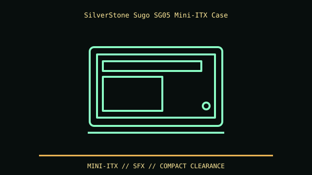

[ IDENTIFIED ENCLOSURE // SILVERSTONE SUGO SG05-B EARLY MINI-ITX CASE ]
SilverStone Sugo SG05 Mini-ITX Case
222 × 176 × 276 mm (W × H × D), about 10.7 L. Classic SG05 card length is about 229 mm; check exact revision before choosing a GPU.

REVISION / FIT CAVEAT: SG05-B/SG05B-LITE and 300/450 W variants differ in PSU and front USB. SG06 is distinct front shell. Verify rear panel, PSU label and exact SKU.
Model-specific mechanical record
| Catalog leaf | Small-form-factor cases |
|---|---|
| Identity / generation | SilverStone Sugo SG05-B early Mini-ITX case |
| Dimensions / clearance | 222 × 176 × 276 mm (W × H × D), about 10.7 L. Classic SG05 card length is about 229 mm; check exact revision before choosing a GPU. |
| Drive bays / mounts | One slim external 5.25-inch optical bay, one internal 3.5-inch position and one 2.5-inch position in original configuration. |
| Board / chassis compatibility | Mini-ITX board and SFX PSU; two expansion slots. Full-height card fit competes with power cable and front intake; long GPU figures vary between classic B and later Lite/450W bundles. |
| Revision identification | SG05-B/SG05B-LITE and 300/450 W variants differ in PSU and front USB. SG06 is distinct front shell. Verify rear panel, PSU label and exact SKU. |
Compatibility and preservation
Mini-ITX board and SFX PSU; two expansion slots. Full-height card fit competes with power cable and front intake; long GPU figures vary between classic B and later Lite/450W bundles.
Keep slim ODD bezel, SFX PSU bracket and 120 mm fan guard. Clean the front filter and confirm GPU length including power plug; small steel tabs can bend during reassembly.
Before transfer or restoration, photograph the complete model label, assembly/board revisions, bay/backplane identifiers and included accessories. Measure the actual specimen when planning installation or shipping; nominal envelope figures may exclude protruding feet, rails, doors or cables.
Manufacturer manuals and archival sources
- SilverStone — Sugo SG05 product specificationsModel-specific manufacturer specification, service manual, or technical reference used for the listed dimensions and mechanical configuration.
- Phoronix — SG05 physical and compatibility reviewSupplemental model documentation or institutional/technical archival record; use the exact product code and manual revision for a specimen.
Listings distinguish base configuration from optional drive, PSU, fan, rack and accessory kits. Do not combine maximum capacities if cages or components occupy the same volume.